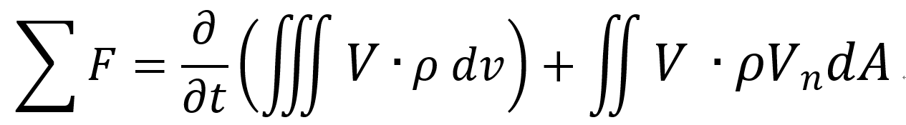
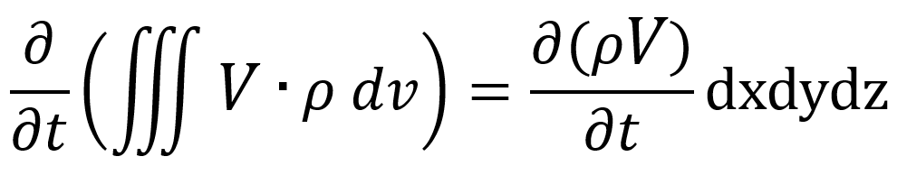
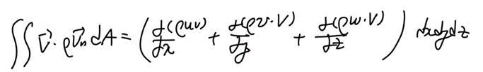
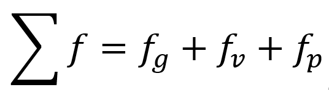
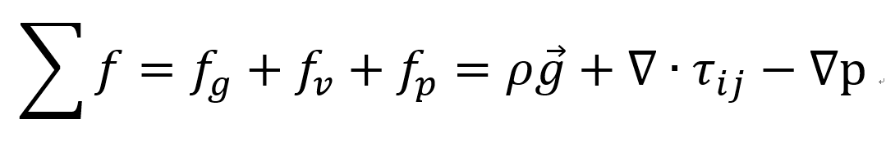
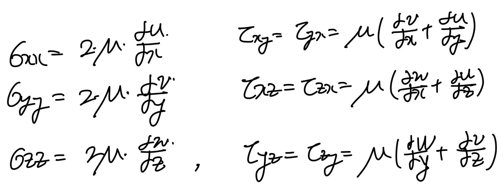

[Fluid Mechanics] Ch 4. Differential Relations for fluid flow - Linear momentum
지난시간,
Control volume + differential relation을 이용하여
Mass conservation 식을 세웠다.
이번에는 두번째 식, linear momentum equation을 세워보자.
지난 시간과 동일하게,
Reynolds transport Theorem 에서부터 시작 한다.

이전 시간과 동일하게 x,y,z 좌표평면에 작은 상자가 있고,
Control volume이라고 정의하자.
![[Fluid Mechanics] Ch 4. Differential Relations for fluid flow - Linear momentum](./images/img-002.jpg)
먼저 부피 Term은,

Flux term의 x성분은 다음과 같이 표현 할 수 있다.
![[Fluid Mechanics] Ch 4. Differential Relations for fluid flow - Linear momentum](./images/img-004.jpg)
따라서 최종적으로, 나머지 성분을 모두 구한후 합치면

이제 원래 식에 부피 Term + Flux term대입해주면,
![[Fluid Mechanics] Ch 4. Differential Relations for fluid flow - Linear momentum](./images/img-006.png)
최종 식을 자세히 보면 F = ma 식이라는 것을 알 수 있다.
(왜냐하면 f 는 단위 부피(dxdydz)당 힘이기 때문)
![[Fluid Mechanics] Ch 4. Differential Relations for fluid flow - Linear momentum](./images/img-007.png)
왼쪽 term은 사실 유체에 작용하는 알짜힘을 나타내는 Term이다.
따라서, 이제부터 실제로 어떤 힘들이 작용하는지 분석해보자.
실제 힘은, Body and surface로 나눌 수 있고,
Body force = gravity
Surface force = shear force + pressure force
로 나눌 수 있다.
![[Fluid Mechanics] Ch 4. Differential Relations for fluid flow - Linear momentum](./images/img-008.png)
각 힘의 기호 단위부피로 나누어 다음과 같이 표현하자.

a) Gravity
![[Fluid Mechanics] Ch 4. Differential Relations for fluid flow - Linear momentum](./images/img-010.png)
중력 = mg이기 때문에 위와 같이 표현 할 수있고,
보통 g의 방향은 -z방향이다(좌표평면을 편의상 그렇게 설정함)
b) Pressure Force
먼저 x성분의 압력을 구한한 후, 나머지 성분도 함쳐서 최종 압력 힘을 구할 수 있다.
![[Fluid Mechanics] Ch 4. Differential Relations for fluid flow - Linear momentum](./images/img-011.jpg)
c) Shear force
![[Fluid Mechanics] Ch 4. Differential Relations for fluid flow - Linear momentum](./images/img-012.jpg)
좌표평면에 shear stress를 표현하면 위 사진과 같다.
이제 x성분의 stress에 의한 힘들을 구해보자.
![[Fluid Mechanics] Ch 4. Differential Relations for fluid flow - Linear momentum](./images/img-013.jpg)
같은 방법으로 y,z,에 stress에 의한 힘들도 위 사진처럼 derive할 수 있다.
최종적으로,
![[Fluid Mechanics] Ch 4. Differential Relations for fluid flow - Linear momentum](./images/img-014.jpg)
이제 구해준, 모든 힘들을 합해 알짜힘을 구하면,

이제 처음에 Reynolds transport 식에서 구한 우항, 부피 term, flux term식을 합치면
![[Fluid Mechanics] Ch 4. Differential Relations for fluid flow - Linear momentum](./images/img-016.png)
위 식은 벡터 함수이므로, x,y,z 성분 나누어서 쓰면 다음과 같다.
![[Fluid Mechanics] Ch 4. Differential Relations for fluid flow - Linear momentum](./images/img-017.png)
위식은 변수가 4개인(x,y,z,t) partial differential equation으로 계산이 불가능하다.
따라서, 가정을 통해서 식을 Simplify 해야만 한다.
1. Inviscid Flow
점성이 없는 유체를 우리는 Inviscid flow라고 부른다.
따라서, 힘 term에서 shear force term이 전부 소거 되므로.
![[Fluid Mechanics] Ch 4. Differential Relations for fluid flow - Linear momentum](./images/img-018.png)
이 식을 Euler's equation이라고 부른다.
2. Newtonian Fluid
CH1에서 다뤘지만,
Newtonian fluid는 shear stress와 strain이 비례한 fluid이다.
따라서 비례계수 viscosity가 고정된 값인 경우이다.
Newtonina fluid에서 stress = strain * viscosity (viscosity는 상수)
tensor의 경우
두 방향성
을 가진다.
따라서,
Stress tensor
= 방향1의 strain * viscosity + 방향2의 strain * viscosity
![[Fluid Mechanics] Ch 4. Differential Relations for fluid flow - Linear momentum](./images/img-019.png)
결국,
Newtonian fluid의 경우 우리는
Stress term
을 다음과 같이 표현 할 수 있다.

이제, 우리가 구한 식에 대입해보면, 아래의 형태로 단순화 된다.
![[Fluid Mechanics] Ch 4. Differential Relations for fluid flow - Linear momentum](./images/img-021.png)
Gradient형태로 변형시키면,
![[Fluid Mechanics] Ch 4. Differential Relations for fluid flow - Linear momentum](./images/img-022.png)
이 식은 유명한
incompressible flow Navier-Stokes Equation 이다.
Nonlinear Partial differential Eq.
Four unknowns : p,u,v,w